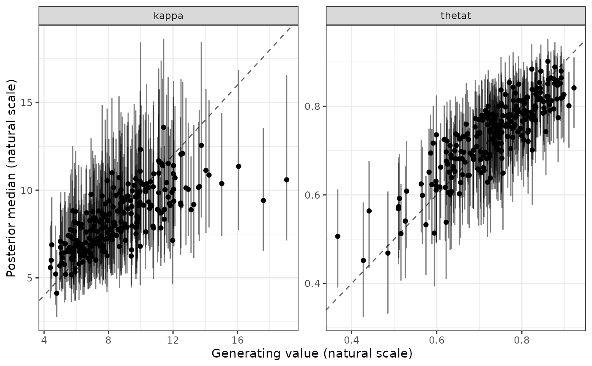
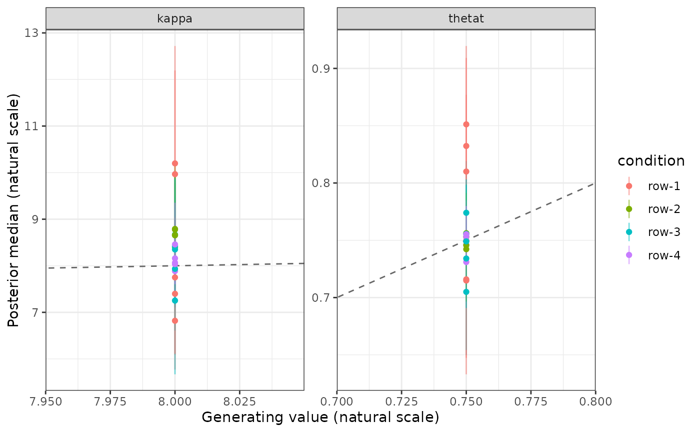

The picture a recovery table is read through: the generating value on the x axis, the posterior median on the y axis, the credible interval as a bar and an identity line to compare against. A model that recovers its parameters puts the points on the line; a model that is biased puts them on a line beside it, and a model that cannot distinguish them puts them on a cloud.
Usage
plot_recovery(x, ...)
# Default S3 method
plot_recovery(x, ...)
# S3 method for class 'bmmtools_recovery'
plot_recovery(
x,
facet_by = "term",
color_by = NULL,
intervals = TRUE,
identity_line = TRUE,
scales = "free",
annotate = FALSE,
...
)
# S3 method for class 'bmmtools_cor_recovery'
plot_recovery(
x,
truth = c("sample", "true"),
facet_by = "term",
color_by = "estimator",
intervals = TRUE,
identity_line = TRUE,
...
)
# S3 method for class 'bmmtools_cross_check'
plot_recovery(
x,
facet_by = "term",
color_by = NULL,
intervals = TRUE,
identity_line = TRUE,
scales = "free",
...
)Arguments
- x
A
bmmtools_recoveryobject fromrecover()orrecover_subjects(), abmmtools_cor_recoveryobject fromrecover_correlations(), or abmmtools_cross_checkobject fromcross_check().- ...
Not used.
- facet_by
A column name to make panels from, or
NULLfor a single panel. Defaults to"term": parameters usually live on scales too different to share an axis.- color_by
A column name to colour points by, or
NULL.NULLby default for a recovery object and"estimator"for a correlation recovery.- intervals
Draw the intervals as bars.
- identity_line
Draw the line where the estimate equals the generating value.
- scales
Passed to
ggplot2::facet_wrap()."free"by default, for the same reasonfacet_byis.- annotate
Label each panel with the Pearson correlation and Lin's concordance from summary() of the rows in that panel. Each panel must then hold a single term, level and condition; filter the object first if it does not.
- truth
For a correlation recovery, the value on the x axis:
"sample", the in-sample correlation, or"true", the generating one. Rows without that value (a nonzerotrue_valueon the natural scale isNA) are left out with a message.
Details
For a correlation recovery from recover_correlations() the x axis is
the in-sample correlation of the simulated subjects (truth = "sample") or the generating correlation (truth = "true"), and the
points are coloured by estimator.
For a cross-check from cross_check() the x axis is the reference,
the fit's interval runs vertically and the reference's own interval,
where it has one, runs horizontally. Panels default to one per term at
the subject level and to a single panel at the population level, where
each term contributes one point; facet_by overrides either.
Examples
# subject-level recovery in one cell of the example grid
cell <- dplyr::filter(
recovery_mixture2p,
level == "subject", condition == "row-4"
)
plot_recovery(cell)

plot_recovery(cell, annotate = TRUE)
# population-level estimates, coloured by design cell
population <- dplyr::filter(recovery_mixture2p, level == "population")
plot_recovery(population, color_by = "condition")
